screenshot_0 · full
[1920, 924] → [1920, 924] · 保留像素 100.0% · 场景 0
原图与选区

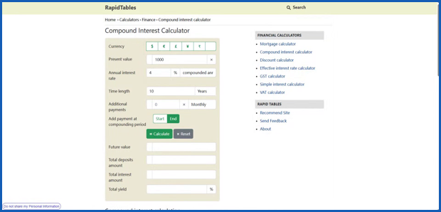
算法输出预览

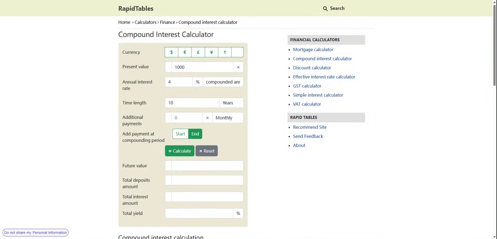
坐标：[0, 0, 1920, 924] · 原因：first_screenshot
算法版本：experimental_theme_aware_per_step_v2。仅用于预览，生成流程未修改。
返回任务总览 · 查看全部步骤拼图 · 查看算法判断 JSON
左侧为原图预览和选区（绿色：裁剪；蓝色：保留整图），右侧为此算法的输出预览；实验版尚未用于生成。点击图片查看原尺寸；预览自动缩放。像素减少比例不等于 token 减少比例。
[1920, 924] → [1920, 924] · 保留像素 100.0% · 场景 0
原图与选区

算法输出预览

坐标：[0, 0, 1920, 924] · 原因：first_screenshot
[1920, 924] → [534, 645] · 保留像素 19.4% · 场景 0
原图与选区
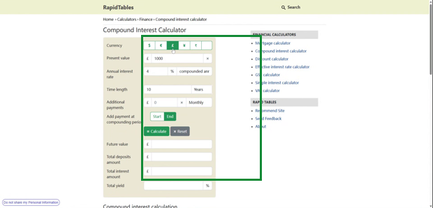
算法输出预览
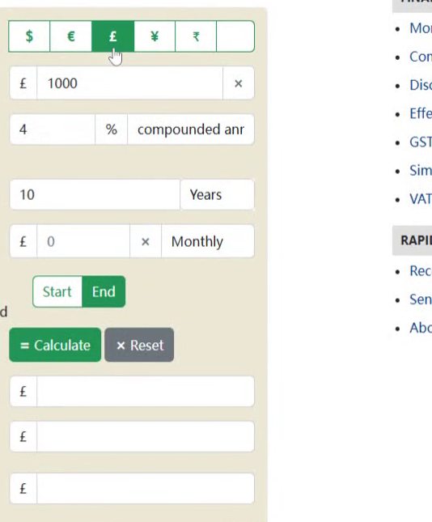
坐标：[626, 157, 1160, 802] · 原因：localized_change
[1920, 924] → [286, 117] · 保留像素 1.9% · 场景 0
原图与选区
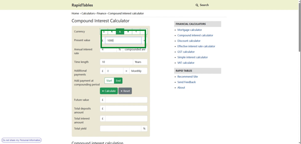
坐标：[644, 191, 930, 308] · 原因：localized_change
[1920, 924] → [287, 98] · 保留像素 1.6% · 场景 0
原图与选区
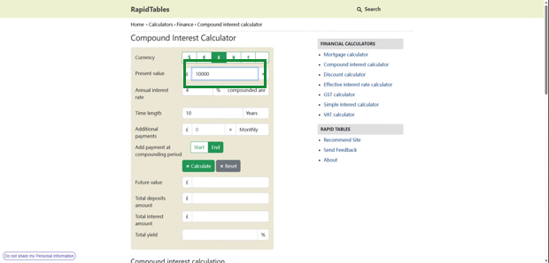
算法输出预览
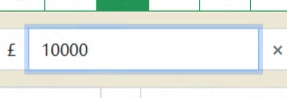
坐标：[643, 210, 930, 308] · 原因：localized_change
[1920, 924] → [321, 199] · 保留像素 3.6% · 场景 0
原图与选区
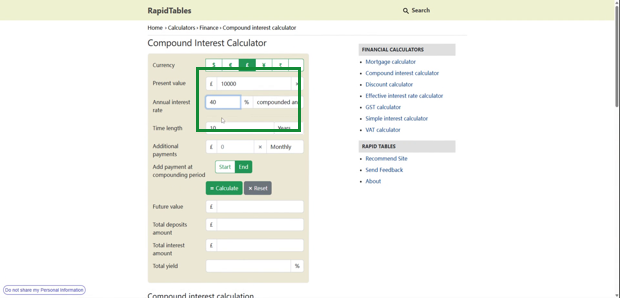
算法输出预览
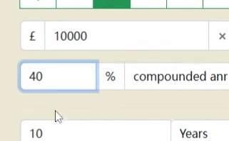
坐标：[609, 209, 930, 408] · 原因：localized_change
[1920, 924] → [633, 246] · 保留像素 8.8% · 场景 0
原图与选区
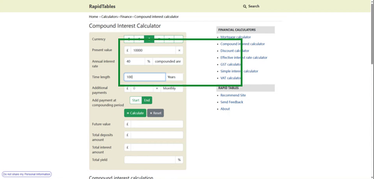
坐标：[609, 200, 1242, 446] · 原因：localized_change
[1920, 924] → [269, 156] · 保留像素 2.4% · 场景 0
原图与选区
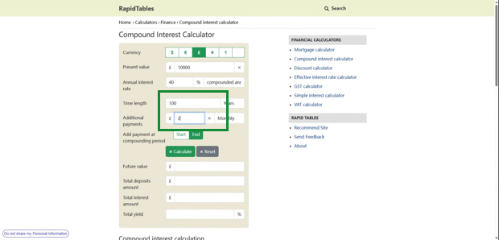
坐标：[609, 349, 878, 505] · 原因：localized_change
[1920, 924] → [1920, 924] · 保留像素 100.0% · 场景 0
原图与选区
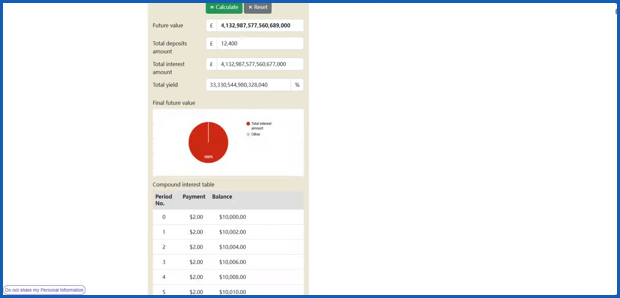
算法输出预览
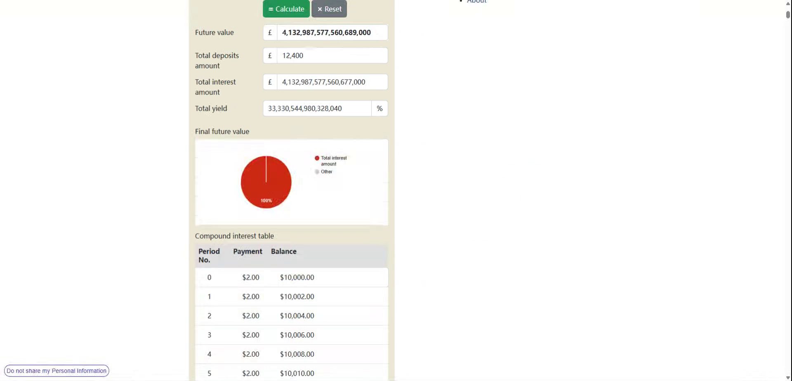
坐标：[0, 0, 1920, 924] · 原因：changes_spread_keep_full